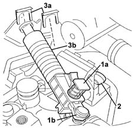
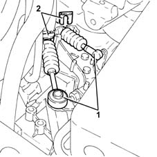
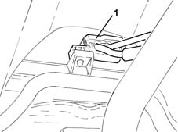
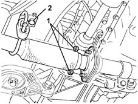
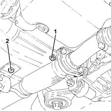
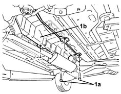
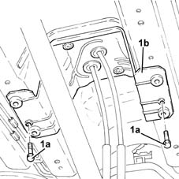
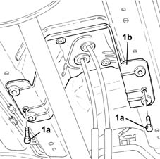

2125C16 gear hand-lever - r r
- Path
- Procedures > 21 GEARBOX > 2125 MANUAL GEARBOX EXTERNAL CONTROLS > 2125C manual gearbox external control (cables) > 2125C16 gear hand-lever - r r
- Kind
- repair procedure (removal / refitting; the operation number is the code)
- Applies to
- all engines; all production periods
- Interactive page
- https://sloeber94.github.io/elrnDB-lYpsln/en/#/2429124
Applies to: engines: 1.2 8v, 1.2 16v, 1.4 16v; all production periods
 Removing
Removing
 Refitting
RefittingPosition the vehicle on the ramp.
Proceed with removal 5530B10 battery - r+r .
Proceed with removal 5530B52 Battery DRIP TRAY/SUPPORT - R.R. .
1. Press the release button (1a) and disconnect the gear selector cable (1b).
2. Disconnect the gear engagement cable.
3. Remove the clips (3a) and release the gear selector and engagement cables (3b) from the mounting bracket.

Applies to: engines: 1.3 JTD; all production periods
Removing
RefittingPosition the vehicle on the ramp.
Proceed with removal 5530B10 battery - r+r .
Proceed with removal 5530B52 Battery DRIP TRAY/SUPPORT - R.R. .
1. Disconnect the gear engagement/selector cables.
2. Remove the stops and release the gear engagement/selector cables from the mounting bracket.

Applies to: engines: 1.2 8v, 1.2 16v, 1.4 16v; all production periods
1. Release the gear selector and engagement cables from the fastening on the steering box, then remove them from the engine compartment.

Applies to: engines: 1.3 JTD; all production periods
1. Release the gear selector and engagement cables from the fastening on the steering box, then remove them from the engine compartment.
Applies to: engines: 1.2 8v, 1.2 16v, 1.4 16v; all production periods
1. Undo the nuts fixing the exhaust manifold and catalytic converter to the exhaust silencer.
2. Undo the bolt fixing the exhaust silencer front mounting bracket.

Applies to: engines: 1.3 JTD; all production periods
1. Tighten the nuts fastening the rigid section of the exhaust pipe between the catalytic converter and the silencer, silencer side.
2. Undo the bolt fixing the exhaust silencer front mounting bracket.

Applies to: engines: 1.2 8v, 1.2 16v, 1.4 16v; all production periods
1. Undo the bolts (1a) and remove the exhaust pipe heat shield (1b).

Applies to: engines: 1.3 JTD; all production periods
1. Undo the bolts (1a) and remove the gear lever mounting (1b) after having released it from the gear selector and engagement cable rubber mountings.

Applies to: engines: 1.2 8v, 1.2 16v, 1.4 16v; all production periods
1. Undo the bolts (1a) and remove the gear lever mounting (1b) after having released it from the gear selector and engagement cable rubber mountings.

Applies to: engines: 1.3 JTD; all production periods
Refitting
RemovingPlace the gear lever mounting in its housing and secure it using the bolts.
Tighten the bolt fixing the exhaust silencer front mounting bracket.
Tighten the nuts fastening the rigid section of the exhaust pipe between the catalytic converter and the silencer, silencer side.
Fit the gear selector and engagement cables in the engine compartment and fasten the band to the steering box.
Secure the gear engagement/selector cables to the mounting bracket with the stops.
Connect the gear engagement/selector cables.
Proceed with refitting 5530B52 Battery DRIP TRAY/SUPPORT - R.R. .
Proceed with refitting 5530B10 battery - r+r .
Remove the car from the ramps.
Applies to: engines: 1.2 8v, 1.2 16v, 1.4 16v; all production periods
Refitting
RemovingPlace the gear lever mounting in its housing and secure it using the bolts.
Place the exhaust pipe heat shield back in its housing and secure it using the bolts.
Tighten the bolt fixing the exhaust silencer front mounting bracket.
Tighten the nuts fixing the exhaust manifold and catalytic converter to the exhaust silencer to the recommended torque.
 | Fastening | Component | Ø | Value (daNm) |
|---|---|---|---|---|
- | Nut | EXHAUST MANIFOLD/CONVERTER | M8 | (Silencer side) 2.3 ÷ 2.8 |
Fit the gear selector and engagement cables in the engine compartment and fasten the band to the steering box.
Position the gear selector and engagement cables in the housings in the mounting bracket and secure them using the clips.
Connect the gear selector and engagement cables.
Proceed with refitting 5530B52 Battery DRIP TRAY/SUPPORT - R.R. .
Proceed with refitting 5530B10 battery - r+r .
Remove the car from the ramps.